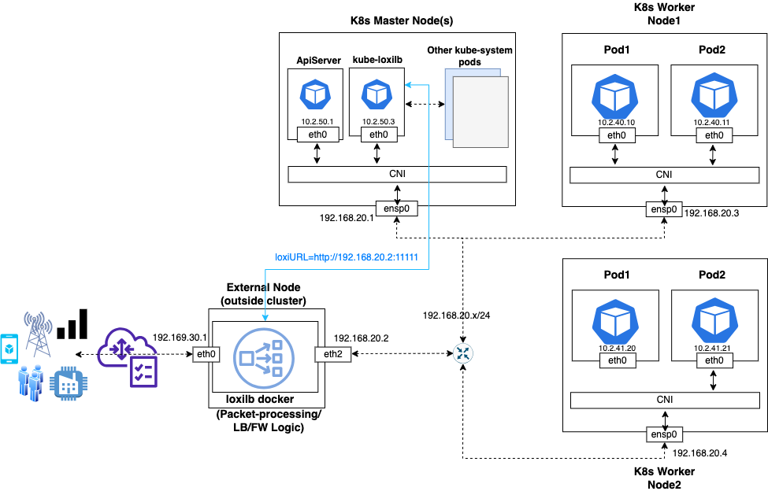

kube loxilb KOR
kube-loxilb란 무엇인가?
kube-loxilb는 loxilb의 Kubernetes Operator 로써, Kubernetes 서비스 로드 밸런서 사양을 포함하고 있으며, 로드 밸런서 클래스, 고급 IPAM(공유 또는 단독 모드) 등을 지원합니다. kube-loxilb는 kube-system 네임스페이스에서 Deployment 형태로 실행됩니다. 이는 항상 k8s 클러스터 내에서 실행되며 노드/엔드포인트/도달 가능성/LB 서비스 등의 변경 사항을 모니터링하는 제어 플레인 역할을 수행합니다. 이는 K8s 오퍼레이터로서 loxilb를 관리합니다. loxilb 구성 요소는 실제 서비스 연결 및 로드 밸런싱 작업을 수행합니다. 따라서 배포 관점에서 kube-loxilb는 K8s 클러스터 내에서 실행되어야 하지만, loxilb는 클러스터 내 또는 클러스터 외부에서 배포할 수 있습니다.
권장 방법은 kube-loxilb 구성 요소를 클러스터 내에서 실행하고 이 가이드에 설명된 대로 외부 노드/VM에 loxilb 도커를 프로비저닝하는 것입니다. 이는 사용자가 온-프레미스 또는 퍼블릭 클라우드 환경에서 loxilb를 실행할 때 유사한 형태로 제공하기 위함입니다. 퍼블릭 클라우드 환경에서는 보통 로드 밸런서/방화벽을 실제 워크로드 외부에 있는 보안/DMZ 영역에서 실행합니다. 하지만 사용자는 편의와 시스템 아키텍처에 따라 외부 노드 모드와 인-클러스터 모드를 선택할 수 있습니다. 다음 블로그들은 이러한 모드들에 대해 설명합니다:
사용자들은 외부 모드에서 해당 loxilb 를 누가 관리할지에 대한 질문이 생길 수 있습니다. 퍼블릭 클라우드에서는 VPC에서 새로운 인스턴스를 생성하고 loxilb 도커를 실행하는 것으로 간단히 사용 가능합니다. 온-프레미스의 경우, 여분의 노드/VM에서 loxilb 도커를 실행해야 합니다. loxilb 도커는 자체 포함 엔터티로, docker, containerd, podman 등 잘 알려진 도구로 쉽게 관리할 수 있습니다. 독립적으로 재시작/업그레이드할 수 있으며, kube-loxilb는 Kubernetes 로드밸런서 서비스가 매번 적절히 구성되도록 보장합니다. 클러스터 내 모드로 배포할 때는 모든 것이 Kubernetes에 의해 관리되며 수동 개입이 거의 필요하지 않습니다.
전체 토폴로지
- 외부 모드의 경우, 모든 구성 요소를 포함한 전체 토폴로지는 다음과 유사해야 합니다:

- 인-클러스터 모드의 경우, 모든 구성 요소를 포함한 전체 토폴로지는 다음과 유사해야 합니다:

kube-loxilb 배포 방법
-
외부 모드를 선택한 경우, loxilb 도커가 클러스터 외부의 노드에 적절히 다운로드 및 설치되었는지 확인하세요. 여기의 가이드를 따르거 다음 문서를 참조하세요. 이 노드에서 k8s 클러스터 노드(나중에 kube-loxilb가 실행될)로의 네트워크 연결이 필요합니다. (PS - 클러스터 내 모드로 실행 중인 경우 이 단계는 건너뛸 수 있습니다)
-
kube-loxilb 설정 yaml을 다운로드하세요:
wget https://github.com/loxilb-io/kube-loxilb/raw/main/manifest/ext-cluster/kube-loxilb.yaml
- 사용자의 필요에 맞게 변수를 수정하세요:
args:
- --loxiURL=http://12.12.12.1:11111
- --externalCIDR=123.123.123.1/24
#- --externalSecondaryCIDRs=124.124.124.1/24,125.125.125.1/24
#- --externalCIDR6=3ffe::1/96
#- --monitor
#- --setBGP=65100
#- --extBGPPeers=50.50.50.1:65101,51.51.51.1:65102
#- --setRoles=0.0.0.0
#- --setLBMode=1
#- --setUniqueIP=false
변수의 의미는 다음과 같습니다:
| 이름 | 설명 |
|---|---|
| loxiURL | loxilb의 API 서버 주소입니다. 이는 1단계의 loxilb 도커의 도커 IP 주소입니다. 지정되지 않으면 kube-loxilb는 loxilb가 클러스터 내 모드로 실행 중이라고 가정하고 자동으로 구성합니다. |
| externalCIDR | 주소를 할당할 CIDR 또는 IP 주소 범위입니다. 기본적으로 할당된 주소는 서로 다른 서비스에 공유됩니다(공유 모드). |
| externalCIDR6 | 주소를 할당할 IPv6 CIDR 또는 IP 주소 범위입니다. 기본적으로 할당된 주소는 서로 다른 서비스에 공유됩니다(공유 모드). |
| monitor | LB 엔드포인트의 라이브니스 프로브를 활성화합니다(기본값: 비활성화). |
| setBGP | 이 서비스를 광고할 BGP AS-ID를 사용합니다. 지정되지 않으면 BGP가 비활성화됩니다. 작동 방식은 여기를 참조하세요. |
| extBGPPeers | 적절한 원격 AS와 함께 외부 BGP 피어를 지정합니다. |
| setRoles | 존재하는 경우, kube-loxilb는 클러스터 모드에서 loxilb 역할을 조정합니다. 또한 특별한 VIP(소스 IP로 선택됨)를 설정하여 풀 NAT 모드에서 엔드포인트와 통신합니다. |
| setLBMode | 0, 1, 2 0 - 기본값 (DNAT만 수행, 소스 IP 유지) 1 - OneARM(소스 IP를 로드 밸런서의 인터페이스 IP로 변경) 2 - Full NAT(소스 IP를 가상 IP로 변경) |
| setUniqueIP | LB 서비스당 고유한 서비스 IP를 할당합니다(기본값: false). |
| externalSecondaryCIDRs | 멀티호밍 지원의 경우, 주소를 할당할 보조 CIDR 또는 IP 주소 범위입니다. |
위의 많은 플래그와 인수는 loxilb 특정 변수을 기반으로 서비스별로 재정의할 수 있습니다.
- kube-loxilb 지원 변수:
| 변수 | 설명 |
|---|---|
| loxilb.io/multus-nets | Multus 를 사용할 때, Multus 네트워크도 서비스 엔드포인트로 사용할 수 있습니다. 사용할 Multus 네트워크 이름을 등록합니다. 예: apiVersion: v1 kind: Service metadata: name: multus-service annotations: loxilb.io/multus-nets: macvlan1,macvlan2 spec: externalTrafficPolicy: Local loadBalancerClass: loxilb.io/loxilb selector: app: pod-01 ports: - port: 55002 targetPort: 5002 type: LoadBalancer |
| loxilb.io/num-secondary-networks | SCTP 멀티호밍 기능을 사용할 때, 서비스에 할당할 보조 IP의 수를 지정할 수 있습니다(최대 3개). loxilb.io/secondaryIPs 주석과 함께 사용할 때는 loxilb.io/num-secondary-networks에 설정된 값이 무시됩니다. (loxilb.io/secondaryIPs 주석이 우선순위를 가집니다) 예: metadata: name: sctp-lb1 annotations: loxilb.io/num-secondary-networks: “2” spec: loadBalancerClass: loxilb.io/loxilb selector: what: sctp-test ports: - port: 55002 protocol: SCTP targetPort: 9999 type: LoadBalancer |
| loxilb.io/secondaryIPs | SCTP 멀티호밍 기능을 사용할 때, 서비스에 할당할 보조 IP를 지정합니다. 여러 IP(최대 3개)를 콤마(,)를 사용하여 동시에 지정할 수 있습니다. loxilb.io/num-secondary-networks 주석과 함께 사용할 때는 loxilb.io/secondaryIPs가 우선순위를 가집니다. 예: metadata: name: sctp-lb-secips annotations: loxilb.io/lbmode: "fullnat" loxilb.io/secondaryIPs: "1.1.1.1,2.2.2.2" spec: loadBalancerClass: loxilb.io/loxilb selector: what: sctp-lb-secips ports: - port: 56004 targetPort: 9999 protocol: SCTP type: LoadBalancer |
| loxilb.io/staticIP | 로드 밸런서 서비스에 할당할 외부 IP를 지정합니다. 기본적으로 외부 IP는 kube-loxilb에 설정된 externalCIDR 범위 내에서 할당되지만, 주석을 사용하여 범위 외부의 IP를 정적으로 지정할 수도 있습니다. 예: apiVersion: v1 kind: Service metadata: name: sctp-lb-fullnat annotations: loxilb.io/lbmode: "fullnat" loxilb.io/staticIP: "192.168.255.254" spec: loadBalancerClass: loxilb.io/loxilb externalTrafficPolicy: Local selector: what: sctp-fullnat-test ports: - port: 56004 protocol: SCTP targetPort: 9999 type: LoadBalancer |
| loxilb.io/liveness | 엔드포인트 선택에 기반한 loxilb가 상태 확인(프로브)을 수행하도록 설정합니다(플래그가 설정된 경우, 활성 엔드포인트만 선택됩니다). 기본값은 비활성화이며, 값이 yes로 설정되면 해당 서비스의 프로브 기능이 활성화됩니다. 예: apiVersion: v1 kind: Service metadata: name: sctp-lb-fullnat annotations: loxilb.io/liveness : "yes" spec: loadBalancerClass: loxilb.io/loxilb externalTrafficPolicy: Local selector: what: sctp-fullnat-test ports: - port: 56004 protocol: SCTP targetPort: 9999 type: LoadBalancer |
| loxilb.io/lbmode | 각 서비스에 대해 개별적으로 LB 모드를 설정합니다. 지정할 수 있는 값 중 하나를 선택합니다: “default”, “onearm”, “fullnat” 또는 "dsr". 자세한 내용은 이 문서를 참조하세요. 예: apiVersion: v1 kind: Service metadata: name: sctp-lb-fullnat annotations: loxilb.io/lbmode: "fullnat" spec: loadBalancerClass: loxilb.io/loxilb externalTrafficPolicy: Local selector: what: sctp-fullnat-test ports: - port: 56004 protocol: SCTP targetPort: 9999 type: LoadBalancer |
| loxilb.io/ipam | 서비스가 사용할 IPAM 모드를 지정합니다. "ipv4", "ipv6", 또는 "ipv6to4" 중 하나를 선택합니다. 예: apiVersion: v1 kind: Service metadata: name: sctp-lb annotations: loxilb.io/ipam : "ipv4" spec: loadBalancerClass: loxilb.io/loxilb externalTrafficPolicy: Local selector: what: sctp-lb ports: - port: 56004 protocol: SCTP targetPort: 9999 type: LoadBalancer |
| loxilb.io/timeout | 서비스의 세션 유지 시간을 설정합니다. 예: apiVersion: v1 kind: Service metadata: name: sctp-lb annotations: loxilb.io/timeout : "60" spec: loadBalancerClass: loxilb.io/loxilb externalTrafficPolicy: Local selector: what: sctp-lb ports: - port: 56004 protocol: SCTP targetPort: 9999 type: LoadBalancer |
| loxilb.io/probetype | 엔드포인트 프로브 작업에 사용할 프로토콜 유형을 지정합니다. "udp", "tcp", "https", "http", "sctp", "ping", 또는 "none" 중 하나를 선택할 수 있습니다. lbMode를 "fullnat" 또는 "onearm"으로 사용하는 경우, probetype을 프로토콜 유형으로 설정합니다. 해제하려면 probetype : "none"을 사용하세요. 예: apiVersion: v1 kind: Service metadata: name: sctp-lb annotations: loxilb.io/probetype : "ping" spec: loadBalancerClass: loxilb.io/loxilb externalTrafficPolicy: Local selector: what: sctp-lb ports: - port: 56004 protocol: SCTP targetPort: 9999 type: LoadBalancer |
| loxilb.io/probeport | 프로브 작업에 사용할 포트를 설정합니다. loxilb.io/probetype 주석이 사용되지 않거나 유형이 icmp 또는 none인 경우 적용되지 않습니다. 예: apiVersion: v1 kind: Service metadata: name: sctp-lb annotations: loxilb.io/probetype : "tcp" loxilb.io/probeport : "3000" spec: loadBalancerClass: loxilb.io/loxilb externalTrafficPolicy: Local selector: what: sctp-lb ports: - port: 56004 protocol: SCTP targetPort: 9999 type: LoadBalancer |
| loxilb.io/probereq | 프로브 요청을 위한 API를 지정합니다. loxilb.io/probetype 주석이 사용되지 않거나 유형이 icmp 또는 none인 경우 적용되지 않습니다. 예: apiVersion: v1 kind: Service metadata: name: sctp-lb annotations: loxilb.io/probetype : "tcp" loxilb.io/probeport : "3000" loxilb.io/probereq : "health" spec: loadBalancerClass: loxilb.io/loxilb externalTrafficPolicy: Local selector: what: sctp-lb ports: - port: 56004 protocol: SCTP targetPort: 9999 type: LoadBalancer |
| loxilb.io/proberesp | 프로브 요청에 대한 응답을 지정합니다. loxilb.io/probetype 주석이 사용되지 않거나 유형이 icmp 또는 none인 경우 적용되지 않습니다. 예: apiVersion: v1 kind: Service metadata: name: sctp-lb annotations: loxilb.io/probetype : "tcp" loxilb.io/probeport : "3000" loxilb.io/probereq : "health" loxilb.io/proberesp : "ok" spec: loadBalancerClass: loxilb.io/loxilb externalTrafficPolicy: Local selector: what: sctp-lb ports: - port: 56004 protocol: SCTP targetPort: 9999 type: LoadBalancer |
| loxilb.io/probetimeout | 프로브 요청의 타임아웃 시간(초)을 지정합니다. 기본값은 60초입니다. 예: apiVersion: v1 kind: Service metadata: name: sctp-lb annotations: loxilb.io/liveness : "yes" loxilb.io/probetimeout : "10" spec: loadBalancerClass: loxilb.io/loxilb externalTrafficPolicy: Local selector: what: sctp-lb ports: - port: 56004 protocol: SCTP targetPort: 9999 type: LoadBalancer |
| loxilb.io/proberetries | 엔드포인트를 비활성으로 간주하기 전에 프로브 요청을 다시 시도하는 횟수를 지정합니다. 기본값은 2입니다. 예: apiVersion: v1 kind: Service metadata: name: sctp-lb annotations: loxilb.io/liveness : "yes" loxilb.io/probetimeout : "10" loxilb.io/proberetries : "3" spec: loadBalancerClass: loxilb.io/loxilb externalTrafficPolicy: Local selector: what: sctp-lb ports: - port: 56004 protocol: SCTP targetPort: 9999 type: LoadBalancer |
| loxilb.io/epselect | 엔드포인트 선택 알고리즘을 지정합니다(e.g "rr", "hash", "persist", "lc" 등). 기본값은 라운드 로빈입니다. 예: apiVersion: v1 kind: Service metadata: name: sctp-lb annotations: loxilb.io/liveness : "yes" loxilb.io/probetimeout : "10" loxilb.io/proberetries : "3" loxilb.io/epselect : "hash" spec: loadBalancerClass: loxilb.io/loxilb externalTrafficPolicy: Local selector: what: sctp-lb ports: - port: 56004 protocol: SCTP targetPort: 9999 type: LoadBalancer |
| loxilb.io/prefLocalPod | 클러스터 내 모드에서 항상 로컬 파드를 선택하도록 설정합니다. 기본값은 false입니다. 예: apiVersion: v1 kind: Service metadata: name: sctp-lb annotations: loxilb.io/prefLocalPod : "yes" spec: loadBalancerClass: loxilb.io/loxilb externalTrafficPolicy: Local selector: what: sctp-lb ports: - port: 56004 protocol: SCTP targetPort: 9999 type: LoadBalancer |
- 필요한 변경을 완료한 후 yaml을 적용하세요:
kubectl apply -f kube-loxilb.yaml
- 위 명령어는 kube-loxilb가 성공적으로 실행되도록 보장합니다. kube-loxilb가 실행 중인지 확인하세요:
k8s@master:~$ sudo kubectl get pods -A
NAMESPACE NAME READY STATUS RESTARTS AGE
kube-system local-path-provisioner-84db5d44d9-pczhz 1/1 Running 0 16h
kube-system coredns-6799fbcd5-44qpx 1/1 Running 0 16h
kube-system metrics-server-67c658944b-t4x5d 1/1 Running 0 16h
kube-system kube-loxilb-5fb5566999-ll4gs 1/1 Running 0 14h
- 마지막으로 워크로드를 위한 서비스 LB를 생성하려면 다음 템플릿 yaml을 사용하여 적용할 수 있습니다.
(참고 - loadBalancerClass 및 기타 loxilb 특정 주석을 확인하세요):
apiVersion: v1
kind: Service
metadata:
name: iperf-service
annotations:
# If there is a need to do liveness check from loxilb
loxilb.io/liveness: "yes"
# Specify LB mode - one of default, onearm or fullnat
loxilb.io/lbmode: "default"
# Specify loxilb IPAM mode - one of ipv4, ipv6 or ipv6to4
loxilb.io/ipam: "ipv4"
# Specify number of secondary networks for multi-homing
# Only valid for SCTP currently
# loxilb.io/num-secondary-networks: "2
# Specify a static externalIP for this service
# loxilb.io/staticIP: "123.123.123.2"
spec:
loadBalancerClass: loxilb.io/loxilb
selector:
what: perf-test
ports:
- port: 55001
targetPort: 5001
type: LoadBalancer
---
apiVersion: v1
kind: Pod
metadata:
name: iperf1
labels:
what: perf-test
spec:
containers:
- name: iperf
image: eyes852/ubuntu-iperf-test:0.5
command:
- iperf
- "-s"
ports:
- containerPort: 5001
사용자는 위 내용을 필요에 따라 변경할 수 있습니다.
- LB 서비스가 생성되었는지 확인하세요:
k8s@master:~$ sudo kubectl get svc
NAME TYPE CLUSTER-IP EXTERNAL-IP PORT(S) AGE
kubernetes ClusterIP 10.43.0.1 <none> 443/TCP 13h
iperf1 LoadBalancer 10.43.8.156 llb-192.168.80.20 55001:5001/TCP 8m20s
- 더 많은 예제 yaml 템플릿은 kube-loxilb의 매니페스트 디렉터리를 참조하세요.
추가 단계: loxilb를 (클러스터 내) 모드로 배포
loxilb를 클러스터 내 모드로 실행하려면, kube-loxilb.yaml의 URL 인수를 주석 처리해야 합니다:
args:
#- --loxiURL=http://12.12.12.1:11111
- --externalCIDR=123.123.123.1/24
이는 kube-loxilb의 자체 검색 모드를 활성화하여 클러스터 내에서 실행 중인 loxilb 파드를 찾고 접근할 수 있게 합니다. 마지막으로 클러스터 내에서 loxilb 파드를 생성해야 합니다:
sudo kubectl apply -f https://github.com/loxilb-io/kube-loxilb/raw/main/manifest/in-cluster/loxilb.yaml
모든 파드가 생성된 후, 다음과 같이 확인할 수 있습니다(클러스터 내에서 kube-loxilb와 loxilb 구성 요소가 실행 중인 것을 볼 수 있습니다):
k8s@master:~$ sudo kubectl get pods -A
NAMESPACE NAME READY STATUS RESTARTS AGE
kube-system local-path-provisioner-84db5d44d9-pczhz 1/1 Running 0 16h
kube-system coredns-6799fbcd5-44qpx 1/1 Running 0 16h
kube-system metrics-server-67c658944b-t4x5d 1/1 Running 0 16h
kube-system kube-loxilb-5fb5566999-ll4gs 1/1 Running 0 14h
kube-system loxilb-lb-mklj2 1/1 Running 0 13h
kube-system loxilb-lb-stp5k 1/1 Running 0 13h
kube-system loxilb-lb-j8fc6 1/1 Running 0 13h
kube-system loxilb-lb-5m85p 1/1 Running 0 13h
이후 서비스 생성 과정은 이전 섹션에서 설명한 것과 동일합니다.
kube-loxilb CRD 사용 방법
kube-loxilb는 커스텀 리소스 정의(CRD)를 제공합니다. 현재 지원되는 작업은 다음과 같습니다(계속 업데이트될 예정입니다): - BGP 피어 추가 - BGP 피어 삭제
CRD 예제는 manifest/crds에 저장되어 있습니다. BGP 피어 설정 예제는 다음과 같습니다:
- 사전 처리(kube-loxilb CRD를 K8s에 등록). 첫 번째 단계로 lbpeercrd.yaml을 적용합니다:
kubectl apply -f manifest/crds/lbpeercrd.yaml
- CRD 정의
BGP 피어를 추가하는 yaml 파일을 생성해야 합니다. 아래 예제는 123.123.123.2의 피어 IP 주소와 원격 AS 번호 65123으로 피어를 생성하는 예제입니다. bgp-peer.yaml이라는 파일을 생성하고 아래 내용을 추가합니다:
apiVersion: "bgppeer.loxilb.io/v1"
kind: BGPPeerService
metadata:
name: bgp-peer-test
spec:
ipAddress: 123.123.123.2
remoteAs: 65123
remotePort: 179
- 새로운 BGP 피어를 추가하기 위해 CRD를 적용합니다:
kubectl apply -f bgp-peer.yaml
- 적용된 CRD 확인
두 가지 방법으로 확인할 수 있습니다. 첫 번째는 loxicmd(loxilb 컨테이너 내)를 통해 확인하는 방법이고, 두 번째는 kubectl을 통해 확인하는 방법입니다.
# loxicmd
kubectl exec -it {loxilb} -n kube-system -- loxicmd get bgpneigh
| PEER | AS | UP/DOWN | STATE |
|----------------|-------|-------------|-------------|
| 123.123.123.2 | 65123 | never | ACTIVE |
# kubectl
kubectl get bgppeerservice
NAME PEER AS
bgp-peer-test 123.123.123.2 65123